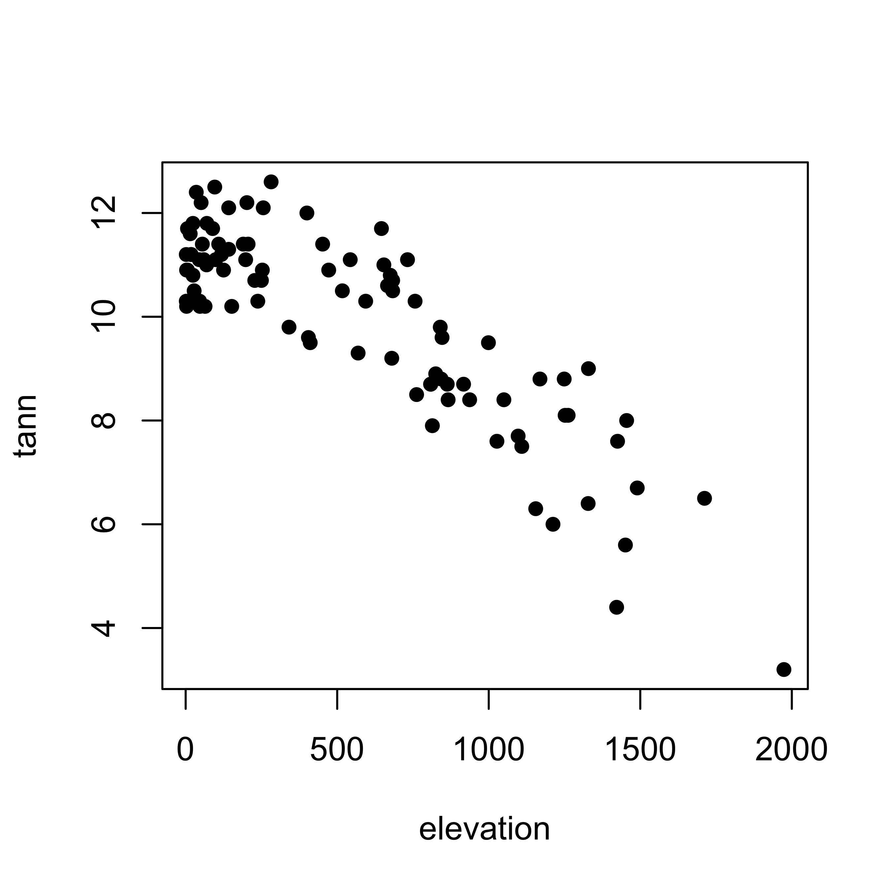
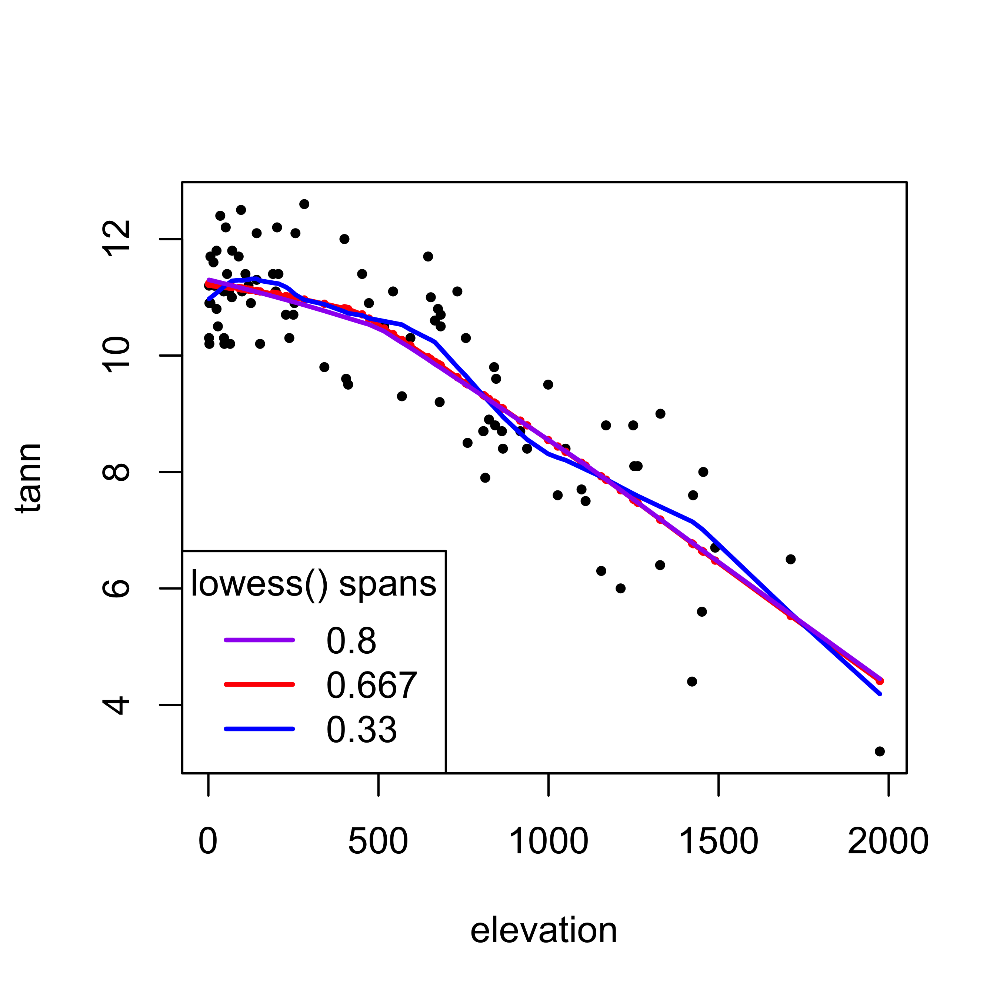
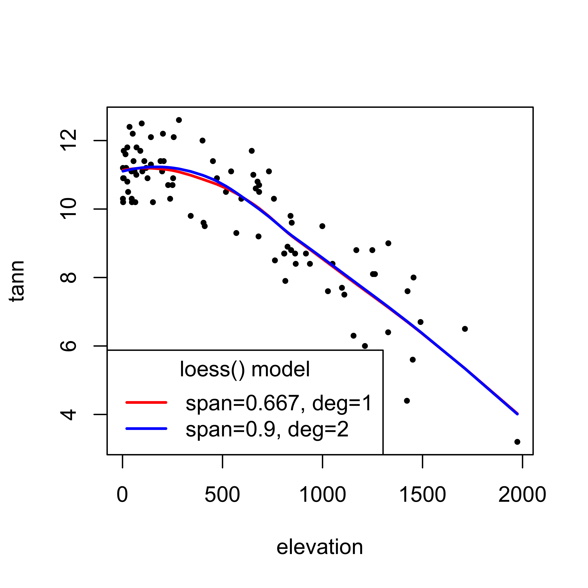
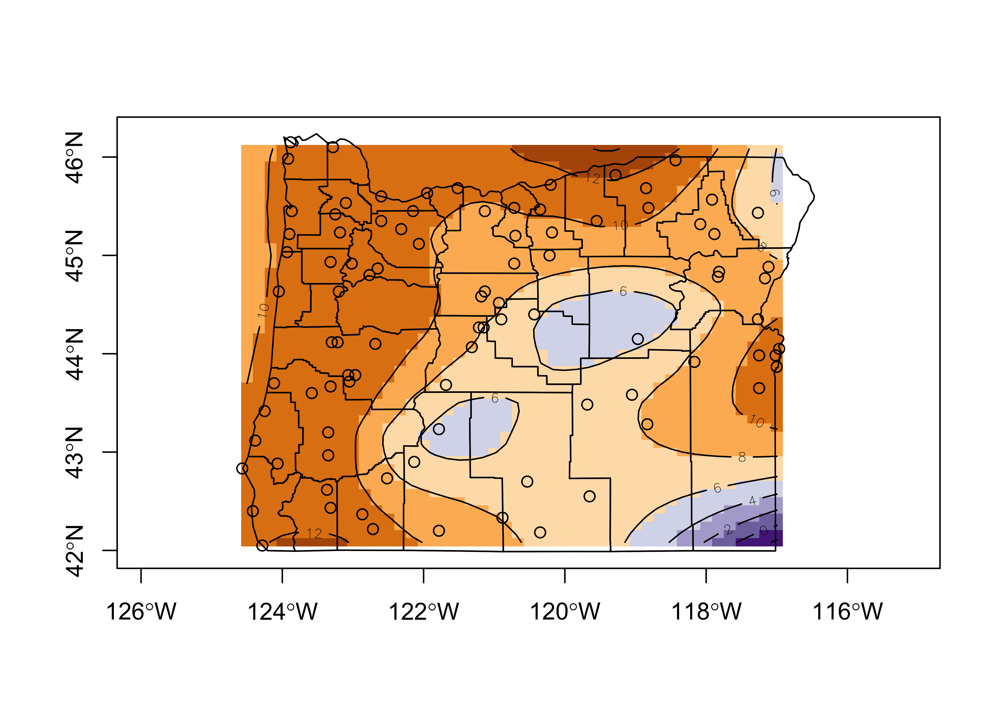
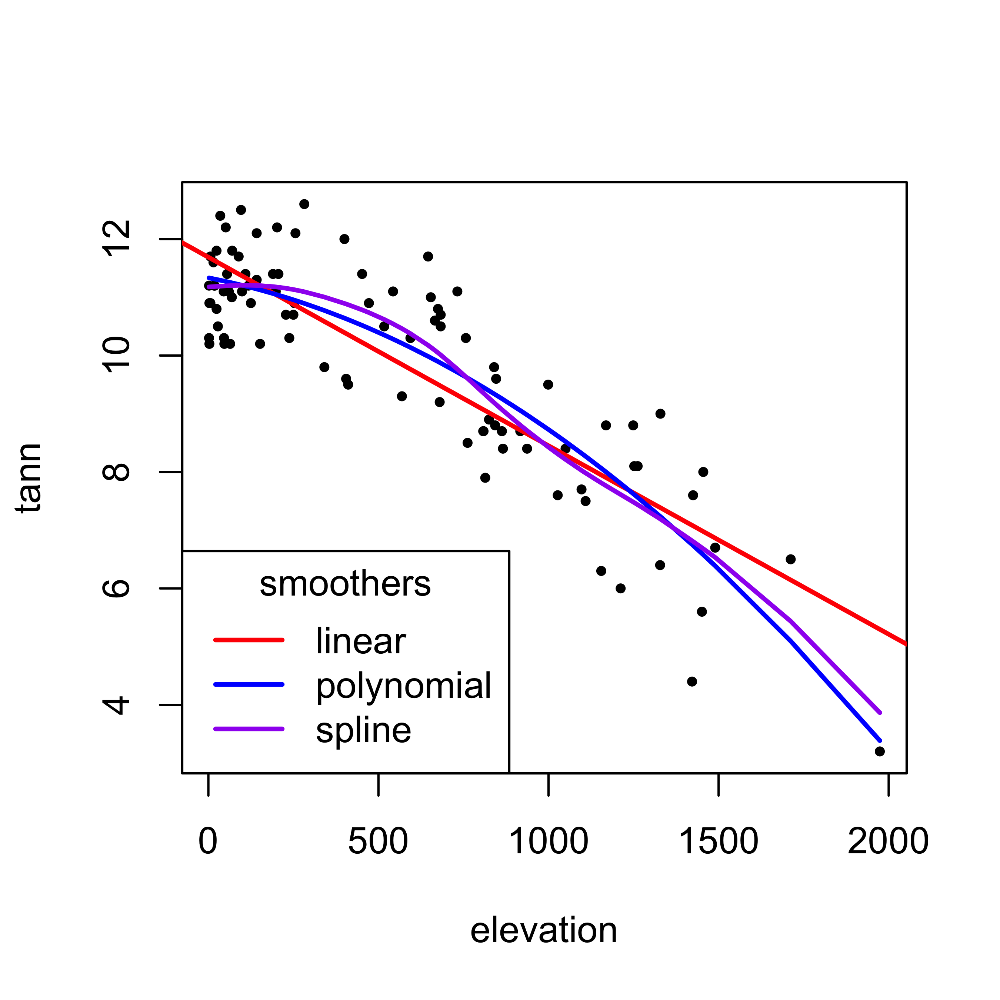

NOTE: This page has been revised for Winter 2021, but may undergo further edits.
Scatter-diagram smoothing (e.g. using the lowess() or loess() functions) involves drawing a smooth curve on a scatter diagram to summarize a relationship, in a fashion that makes few assumptions initially about the form or strength of the relationship. It is related to (and is a special case of) nonparametric regression, in which the objective is to represent the relationship between a response variable and one or more predictor variables, again in way that makes few assumptions about the form of the relationship. In other words, in contrast to “standard” linear regression analysis, no assumption is made that the relationship is represented by a straight line (although one could certainly think of a straight line as a special case of nonparametric regression).
If the basic decomposition-of-the-data model is:
data = predictable component + noise,
then for the standard bivariate or multiple (linear) regression, the model is
data = straight-line, polynomial or linearizable function + noise,
while for nonparametric regression, the model is
data = smooth function determined by data + noise.
Another way of looking at scatter diagram smoothing is as a way of depicting the “local” relationship between a response variable and a predictor variable over parts of their ranges, which may differ from a “global” relationship determined using the whole data set. (And again, the idea of “local” as opposed to “global” relationships has an obvious geographical analogy.) Nonparametric regression can be thought of as generalizing the scatter plot smoothing idea to the multiple-regression context.
In ordinary linear regression analysis, the objective can be considered to be drawing a line through the data in an optimal way, where the parameters (regression coefficients) are determined using all of the data, i.e. they are globally determined. However, it is possible to think of the line as connecting the points, that for each value of X, represent the local density maxima of Y–it just happens that these local maxima happen to be arranged along a straight line.
A bivariate smoother is a function or procedure for drawing a smooth curve through a scatter diagram. Like linear regression (in which the “curve” is a straight line), the smooth curve is drawn in such a way as to have some desirable properties. In general, the properties are that the curve indeed be smooth, and that locally, the curve minimize the variance of the residuals or prediction error.
The bivariate smoother used most frequently in practice is known as a “lowess” or “loess” curve. The acronyms are meant to represent the notion of locally weighted regression–a curve- or function-fitting technique that provides a generally smooth curve, the value of which at a particular location along the x-axis is determined only by the points in that vicinity. The method consequently makes no assumptions about the form of the relationship, and allows the form to be discovered using the data itself. (The difference between the two acronyms or names is mostly superficial, but there is an actual difference in R–there are two different functions, lowess() and loess(), the former is an older, simple scatter-diagram-smoothing function, while the latter is newer and more flexible. There is also the locfit (local regression) package that is more flexible still.)
The mechanics of loess:
The parameters of an individual loess() curve:
The first examples of nonparametric regression are the familiar scatter diagram smoother lowess() and the related, more flexible loess() function.
Load some packages, and attach a data set of annual temperatures at Oregon climate stations.
library(RColorBrewer)
library(sf)attach(ortann)
names(ortann)## [1] "station" "latitude" "longitude" "elevation" "tann"Look at the annual temperature data:
plot(elevation, tann, pch=16)
Note that there are actually two versions of the lowess or loess scatter-diagram smoothing approach implemented in R lowess() and loess(). The former function (lowess()) was implemented first, while the latter (loess()) is more flexible and powerful. Because the function names are pronouced similarly, they are often confused, but because they basically do the same thing, that’s not such a big deal.
A simple “lowess/loess” curve is constructed using the lowess() function, which finds a “fitted” value for each data point; these can be plotted as individual symbols, but they are usually connected with lines. The lowess() function has a “span” argument (sometimes symbolized by l) that represents the proportion of the total number of points that contribute to each local fitted value. In practice, the lowess() function is often embedded in a points() or ’lines()` function.
In the following, the specific fitted values produced by the lowess() function (one per data point) are plotted in red, and the lowess curve is added, also in red. On top of that, two additional curves are plotted (in magenta and purple) that show the effect of the smoothing parameter choice. The green curve is smoother than the default (l = 0.667), and the magenta curve is “looser” than the default (l = 0.33).
# lowess
plot(elevation, tann, pch=16, cex=0.6)
points(lowess(elevation, tann), pch=16, col="red", cex=0.5)
lines(lowess(elevation,tann), col="red", lwd=2)
# different smoothing
lines(lowess(elevation, tann, f=0.33), col="blue", lwd=2)
lines(lowess(elevation, tann, f=0.80), col="purple", lwd=2)
legend("bottomleft", title = "lowess() spans", legend=c("0.8","0.667","0.33"), lwd=2, cex=1, col=c("purple","red","blue"))
The newer loess() function uses a formula to specify the response (and in its application as a scatter-diagram smoother) a single predictor variable. The loess() function creates an object that contains the results, and the predict() function retrieves the fitted values. These can then be plotted along with the response variable. However, the points must be plotted in increasing order of the predictor variable values in order for the lines() function to draw the line in an appropriate fashion. This is done by using the results of the order() function applied to the predictor variable values, and the explicit subscripting (in square brackets [ ]) to arrange the observations in ascending order.
# loess -- first model
loess_model <- loess(tann ~ elevation)
loess_model## Call:
## loess(formula = tann ~ elevation)
##
## Number of Observations: 92
## Equivalent Number of Parameters: 4.69
## Residual Standard Error: 0.8758# second model, smoother curve
loess_model2 <- loess(tann ~ elevation, span=0.90, degree=2)
loess_model2## Call:
## loess(formula = tann ~ elevation, span = 0.9, degree = 2)
##
## Number of Observations: 92
## Equivalent Number of Parameters: 4.04
## Residual Standard Error: 0.8752# plot the curves
plot(tann ~ elevation, pch=16, cex=0.6)
hat1 <- predict(loess_model)
lines(elevation[order(elevation)], hat1[order(elevation)], col="red", lwd=2)
hat2 <- predict(loess_model2)
lines(elevation[order(elevation)], hat2[order(elevation)], col="blue", lwd=2)
legend("bottomleft", title = "loess() model", legend=c("span=0.667, deg=1","span=0.9, deg=2"), lwd=2, cex=1, col=c("red","blue"))
A locally determined surface can be constructed using loess() which is not limited to a single predictor variable, by first fitting a model that illustrates the response of the response variable as a function of two (or more) location variables, and then using the predict() function to visualize the resulting surface:
# tann as a function of latitude and longitude (and interaction)
tann_loess <- loess(tann ~ longitude + latitude, span=0.3)
summary(tann_loess)## Call:
## loess(formula = tann ~ longitude + latitude, span = 0.3)
##
## Number of Observations: 92
## Equivalent Number of Parameters: 21.11
## Residual Standard Error: 0.9942
## Trace of smoother matrix: 25.23 (exact)
##
## Control settings:
## span : 0.3
## degree : 2
## family : gaussian
## surface : interpolate cell = 0.2
## normalize: TRUE
## parametric: FALSE FALSE
## drop.square: FALSE FALSE# poor man's R-squared value
cor(tann, tann_loess$fitted)^2## [1] 0.8098961Now create an interpolation “target” grid, get the predicted (i.e. interpolated) values, and plot the results.
# create an interpolation target grid to display predicted values
grid_longitude <- seq(-124.5000, -116.8333, .1667)
grid_latitude <- seq(42.0000, 46.1667, .0833)
grid_mar <- list(longitude=grid_longitude, latitude=grid_latitude)
# get the fitted (interpolated) values
tann_interp <- predict(tann_loess, expand.grid(grid_mar))
tann_z <- matrix(tann_interp, length(grid_longitude),
length(grid_latitude))
# plot the interpolated values as shaded rectangles and contours
nclr <- 8
plotclr <- brewer.pal(nclr, "PuOr")
plotclr <- plotclr[nclr:1] # reorder colors
plot(st_geometry(orotl_sf), axes=TRUE)
image(grid_longitude, grid_latitude, tann_z, col=plotclr, add=T)
contour(grid_longitude, grid_latitude, tann_z, add=TRUE)
points(longitude, latitude)
plot(st_geometry(orotl_sf), add=T)
Loess is one of a number of smoothers (including linear regression as an end-member) that can be used. The different smoothers vary in the assumptions they make about
The other scatter diagram smoothers include a straight, or “least-squares” line, a low-order polynomial least-squares line, and the “smoothing spline”. Each can be viewed as special cases of the more flexible loess-type smoothers in which the curve is very simple. The best way to understand these different smoothers is to compare them:
# first-order polynomial (i.e. a straight line)
linear_model <- lm(tann ~ elevation)
linear_model##
## Call:
## lm(formula = tann ~ elevation)
##
## Coefficients:
## (Intercept) elevation
## 11.688139 -0.003238# second order polynomial
poly2_model <- lm(tann ~ elevation+ I(elevation^2))
poly2_model##
## Call:
## lm(formula = tann ~ elevation + I(elevation^2))
##
## Coefficients:
## (Intercept) elevation I(elevation^2)
## 1.133e+01 -1.147e-03 -1.459e-06poly2_hat <- predict(poly2_model)spline_model <- smooth.spline(elevation, tann)
spline_model## Call:
## smooth.spline(x = elevation, y = tann)
##
## Smoothing Parameter spar= 1.12444 lambda= 0.003202393 (15 iterations)
## Equivalent Degrees of Freedom (Df): 5.311004
## Penalized Criterion (RSS): 63.56046
## GCV: 0.800279Plot the differnt smoothers
plot(tann ~ elevation, pch=16, cex=0.6)
abline(linear_model, col="red", lwd=2)
lines(elevation[order(elevation)], poly2_hat[order(elevation)],
col="blue", lwd=2)
lines(spline_model, col="purple", lwd=2)
legend("bottomleft", title = "smoothers", legend=c("linear","polynomial","spline"), lwd=2, cex=1, col=c("red","blue","purple")) [Back to top]
The various smoothers can be summarized as follows
| Assumptions | Smoother | Form | Influence of individual points |
|---|---|---|---|
| fewest | loess | no assumptions | unusual points discounted |
| smoothing spline | smooth curve | some discounting of unusual points | |
| robust, robust MM | straight line | unusual points discounted | |
| least squares (curvilinear) | curve | all points influential | |
| most | least squares (linear) | straight line | all points influential |
{kind=link}
{kind=link}
{kind=link}
{kind=link}
{kind=link}